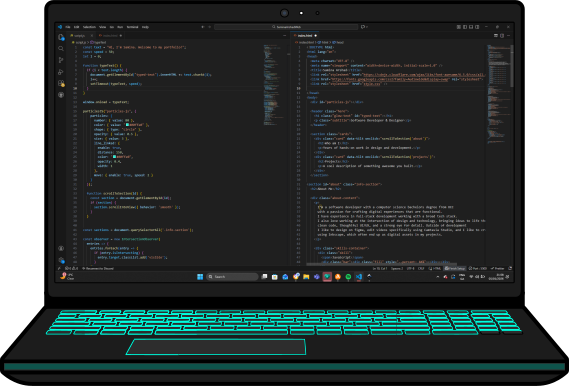

Fullstack Developer
My education, passion and skills.
Projects I've built using a variety of technologies.
I’m a software developer with a computer science bachelors degree from UCC with a passion for crafting digital experiences that are functional. I have experience in fullstack development working with a broad tech stack. I also love working at the intersection of design and technology, bringing ideas to life through clean code, thoughtful UI/UX, and a strong eye for detail.
Motion Control platformer game
A gamified travel guide website.
Colour scheme generator based on theme